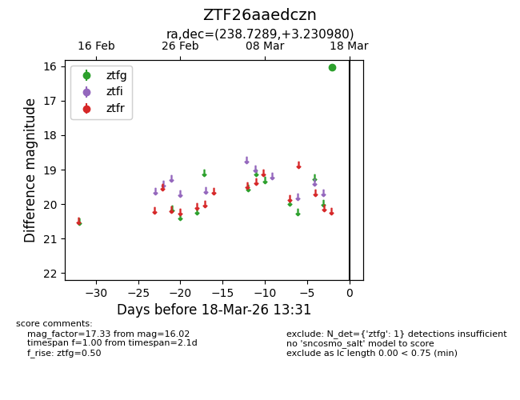
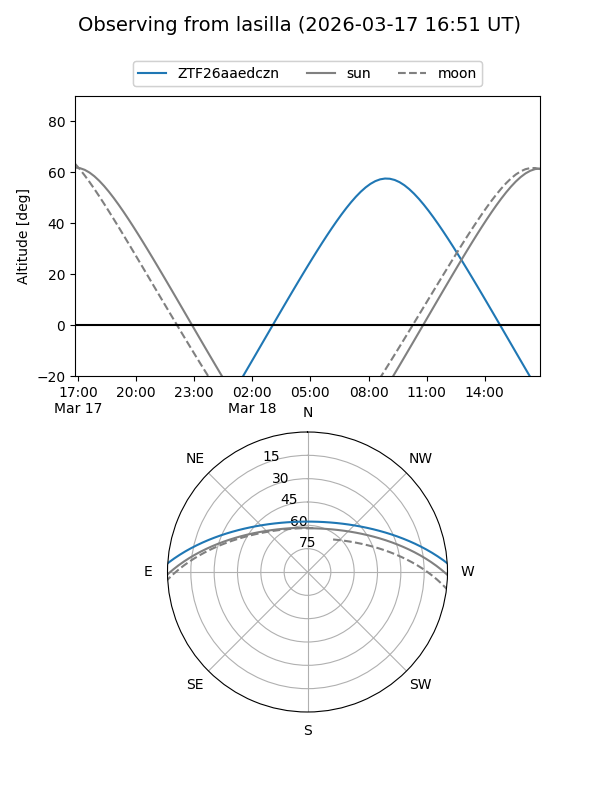
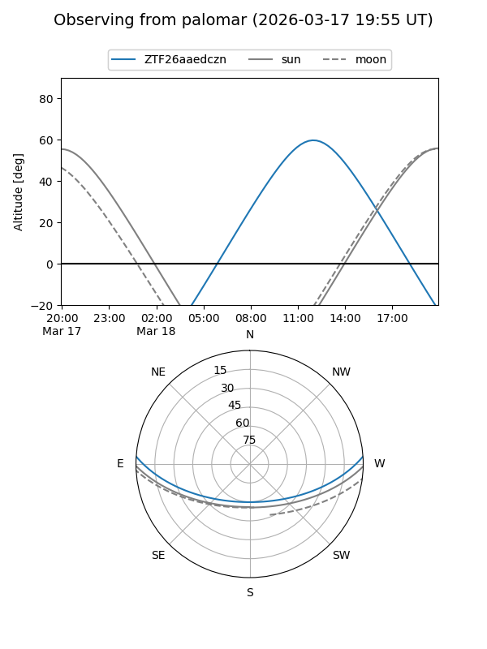

ZTF26aaedczn
Target ZTF26aaedczn at 2026-03-18 13:33
Aliases and brokers:
FINK: link
Lasair: link
ALeRCE: link
alt names
ZTF26aaedczn (ztf,fink_ztf)
Coordinates:
equatorial (ra, dec) = 238.7289,+3.23098
equatorial (HMS+DMS) = 15:54:54.95,+03:13:51.53
galactic (l, b) = (12.5089,+40.12141)
Flags:
Photometry:
last ztfg=16.02
1 ztfg detections
Lightcurve

Visibility


Additional plots